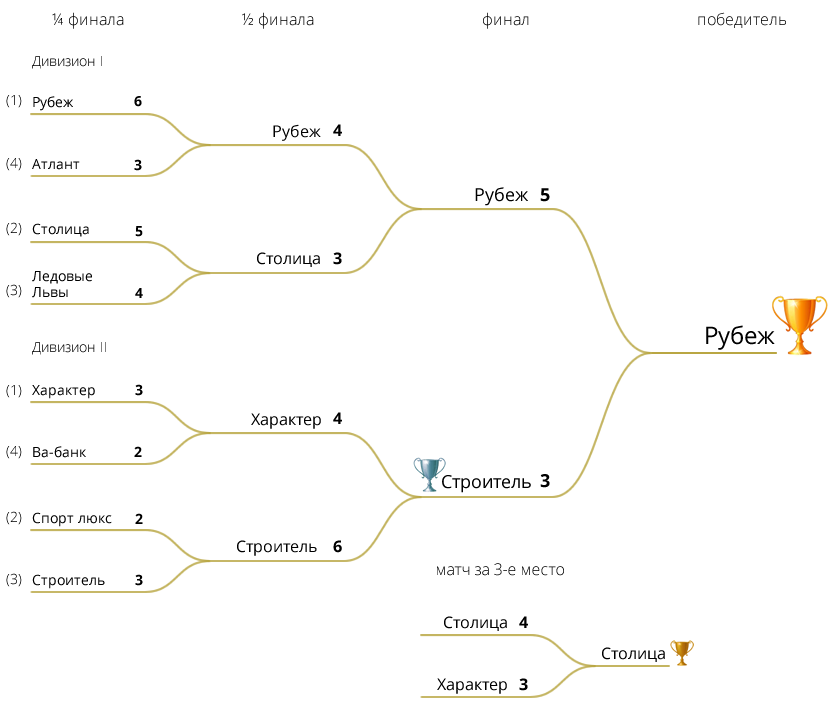

| № | Команда | И | В | ВО | П | ПО | Ш | О |
|---|---|---|---|---|---|---|---|---|
| 1 | РУБЕЖ | 18 | 15 | 1 | 1 | 1 | 132:60 | 48 |
| 2 | СТОЛИЦА | 18 | 14 | 0 | 4 | 0 | 101:48 | 42 |
| 3 | ЛЕДОВЫЕ ЛЬВЫ | 18 | 13 | 1 | 4 | 0 | 100:57 | 41 |
| 4 | АТЛАНТ | 18 | 12 | 0 | 6 | 0 | 91:61 | 36 |
| 5 | МИФ | 18 | 8 | 0 | 8 | 2 | 66:65 | 26 |
| 6 | МИКСТ | 18 | 3 | 1 | 13 | 1 | 62:96 | 12 |
| 7 | ВИКИНГ | 18 | 1 | 0 | 17 | 1 | 42:142 | 1 |
| № | Команда | И | В | ВО | П | ПО | Ш | О |
|---|---|---|---|---|---|---|---|---|
| 1 | ХАРАКТЕР | 18 | 10 | 1 | 5 | 1 | 80:53 | 33 |
| 2 | СПОРТ ЛЮКС | 18 | 9 | 1 | 8 | 0 | 79:73 | 29 |
| 3 | СТРОИТЕЛЬ | 18 | 9 | 1 | 8 | 0 | 79:95 | 29 |
| 4 | ВА-БАНК | 18 | 9 | 0 | 8 | 1 | 80:56 | 28 |
| 5 | МТМ | 18 | 5 | 2 | 10 | 0 | 54:73 | 19 |
| 6 | МИНСКИЕ МОЛНИИ | 18 | 1 | 0 | 16 | 1 | 29:116 | 4 |
Примечание:
И — игры,
В — выигрыши в основное время,
ВО — выигрыши в овертайме (или по буллитам),
П — поражения в основное время,
ПО — поражения в овертайме (или по буллитам),
Ш — шайбы (забито / пропущено),
О — очки.

Лучший вратарь — Вадим Пекарский
Лучший защитник — Максим Шиманский (Столица)
Лучший нападающий — Владимир Козырев (Атлант)
Лучший бомбардир — Андрей Асташевич (Рубеж)
| Имя | Фамилия | Команда | Шайбы | Передачи | Очки | |
|---|---|---|---|---|---|---|
| 1. | Андрей | Асташевич | Рубеж | 52 | 44 | 96 |
| 2. | Вадим | Бекбулатов | Рубеж | 28 | 37 | 65 |
| 3. | Андрей | Ковалев | Рубеж | 20 | 34 | 54 |
| 4. | Александр | Чурабаев | Строитель | 20 | 27 | 47 |
| 5. | Владимир | Козырев | Атлант | 17 | 27 | 44 |
| 6. | Алексей | Дробыш | Спорт люкс | 22 | 20 | 42 |
| 7. | Олег | Антоненко | Рубеж | 17 | 25 | 42 |
| 8. | Сергей | Ясюкевич | Ва-банк | 26 | 15 | 41 |
| 9. | Егор | Локтев | Атлант | 23 | 17 | 40 |
| 10. | Сергей | Ткачев | Атлант | 19 | 19 | 38 |